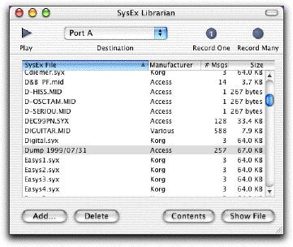
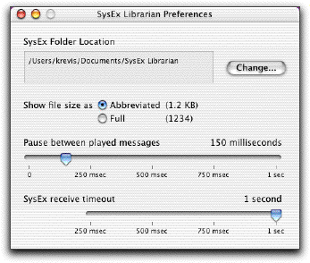

|
SysEx Librarian Documentation |
||
|
SysEx Librarian is a utility for Mac OS X which lets you communicate with MIDI devices using System Exclusive messages, also known as SysEx. The most common use is to backup patch data from synthesizers, although there are others (such as sending firmware updates). SysEx Librarian makes it easy to keep a library of the SysEx files you use most often, and to record new SysEx files. SysEx Librarian is FREE to download and use. The SysEx Librarian web page can be found at this URL:
SysEx Librarian is based around the idea of a library of files. Each file contains one or more SysEx messages. If you are familiar with iTunes, you will find that SysEx Librarian works much the same way.  The main part of the window contains the list of files in the library. The columns are as follows: SysEx File: The name of the file Manufacturer: The manufacturer of the device that this SysEx data is for. # Msgs: The number of individual SysEx messages in the file. Size: The size of all of the SysEx data in the file.
To add files to the library, use the Add... button to open the standard Mac open dialog. You may also drag files or folders from the Finder into the list of files, or onto the SysEx Librarian icon in the dock. SysEx Librarian understands raw SysEx files (which often have the .syx extension) and can also read SysEx messages from standard MIDI files (which usually have the extension .mid). You can change a file's name by double-clicking its name, or by selecting it and choosing "Change Name" from the menu. Use the Delete button or the Delete key on your keyboard to delete a file from the library. To see the actual file on your disk, choose it and press the Show File button (or use the Show SysEx File menu command); the Finder will select the file and show it to you. To send SysEx to a device, select a file by clicking on it. (Shift-click or command-click to select more than one file.) Then press the Play button, and the SysEx messages in the selected files will be sent to the selected destination. A progress indicator will show the number of messages and amount of data sent. (If you choose the destination named "Act as a source for other programs", other MIDI programs running on the computer will see an input source named "SysEx Librarian". You can then play SysEx messages to those programs. Sending will happen instantaneously, so no progress indicator will be shown.) To record a new file, press the Record One or Record Many button. Record One records just one SysEx message, and then automatically stops recording. Record Many will keep recording messages until you tell it to stop. SysEx Librarian listens to all input ports on all MIDI interfaces connected to your computer, so you don't need to select any one in particular. Recorded files are stored in your SysEx folder. By default, this is a folder named "SysEx Librarian", in the Documents folder in your home folder. However, you may change this location in the preferences. Note that you may also move files around on your disk; SysEx Librarian will try to find them even if they have moved. If a file can't be found, SysEx Librarian will ask you to locate it.
To see the contents of a SysEx file, select it and press the Contents button, or use the Show Contents menu command. This will open a new window showing a list of messages in the file.
The preferences window lets you change the way that SysEx Librarian works. Changes in this window take effect immediately, and are automatically saved.  SysEx Folder Location: The location where newly recorded SysEx files are stored, by default. To change this, press the Change button and choose a different folder. Show file size as Abbreviated / Full: Switches the file size shown in the main window between an abbreviated format (like "1.2 KB") and the full number of bytes (like "1234"). Pause between played messages: The amount of time that SysEx Librarian pauses between each SysEx message that it plays. Some devices need some time to process a message before they can accept another one. The default (150 milliseconds) should be enough for most devices. Many devices don't need any delay at all; try turning the pause down to 0 to make playback as quick as possible. SysEx receive timeout: If a SysEx message does not end normally, SysEx Librarian will wait this amount of time before deciding that the message is finished. The default (1 second) should be fine for just about everyone.
You must have a Mac OS X driver for your MIDI interface; Mac OS 9 drivers will not work. Please check with the manufacturer of your device for drivers. If you have a device hooked up, and the proper driver, but you don't see it in the menu, you may be running into a problem with the Classic environment. Classic tends to grab USB devices for its own exclusive use, and doesn't let programs on the native Mac OS X side get to them. Try shutting down Classic and starting SysEx Librarian again. (If SysEx Librarian is started first, and is running when Classic starts, you will not encounter this problem.) Notes on specific interfaces and drivers:
Having other problems? Please let me know and I'll try to help find a solution. SysEx Librarian is a young program, and there are a lot of very weird MIDI devices out there that it hasn't yet been tested with. I want to get it working as well as possible, but I can't do that unless you tell me about problems that you encounter.
Please send questions or comments to: SysExLibrarian@snoize.com
SysExLibrarian is copyright © 2002 by Kurt Revis. All rights reserved. SysEx Librarian uses some publicly available code:
Also: Thanks to the folks on the CoreAudio-API mailing list for all the help they have provided, and to everyone who has sent in bug reports and feature requests. Also thanks to Steve Grace for his original SysEx utility for the Classic Mac OS.
| ||